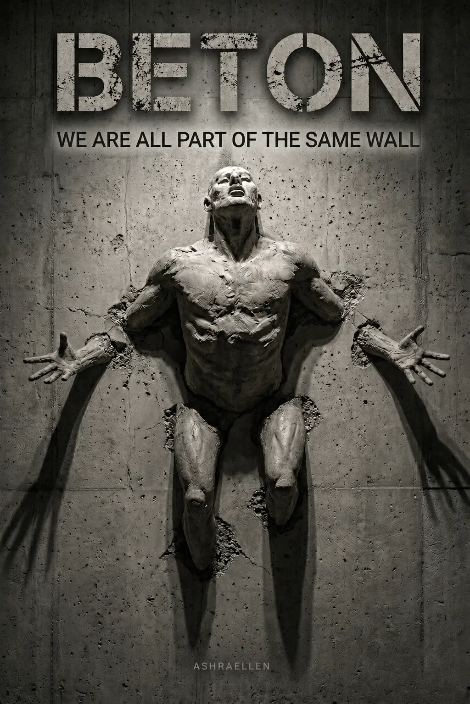

BETON
Tom I trylogii MONOLITH.
Akta
Tom I

Beton nie zaczyna się od ściany. Zaczyna się od nawyku nazywania więzienia stabilnością.
AKTA № 2026-001B. Indeks: 6666548A. STATUS: Ściśle tajne.
Opis
o książce
BETON to filozoficzna dystopia, thriller psychologiczny i społeczna fantastyka o świecie, w którym stabilność stała się nową formą więzienia. To pierwszy tom trylogii MONOLITH i pierwszy etap weryfikacji rzeczywistości.
Anton nie jest tylko pracownikiem. Jest narzędziem Systemu, przeznaczonym do kalibracji ludzkich znaczeń. Jego praca polega na wykrywaniu i wygładzaniu „szumu”: zbyt żywych wspomnień, zbyt ostrych uczuć, zbyt niebezpiecznych pytań.
W tym świecie wszystko, co narusza monolityczność struktury, musi zostać poprawione. Strach, miłość, ból, wybór, przeszłość, wina i pamięć mogą zostać zapisane od nowa — aż do chwili, gdy sam System zaczyna pękać.
BETON to powieść-stenogram wydobyta z zamkniętych archiwów Departamentu Znaczeń. To historia kontroli świadomości, edycji pamięci i człowieka, który odkrywa pierwszą rysę w idealnie zbudowanym świecie.
„Beton boi się tylko tych, którzy przestali uważać się za jego część.”
Polska edycja jest w przygotowaniu. Obecnie dostępne jest wydanie angielskie.
 — znak obecności
— znak obecności